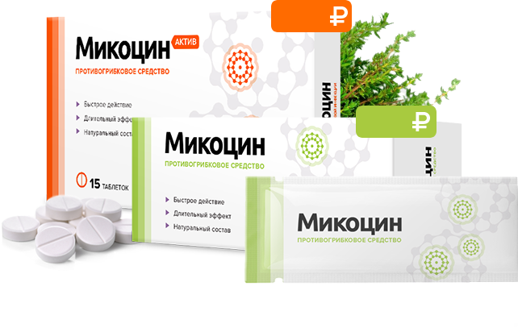

Микоцин

№1 Для избавления
от любого типа грибка

Рекомендован
дерматологами

13000+ довольных
клиентов за 2018 год

299
299
Комплексное
избавление
от грибка —
изнутри u cнаружи
-
Комплекс Микоцин устраняет зуд, неприятный запах и возвращает эстетичный вид -
Таблетки Микоцин уничтожают все виды грибка на ногтях и коже -
Гель Микоцин восстанавливает кожу и создает на ней защитный барьер
Бесплатно
Успейте заказать
со скидкой
до 10.09.2018
918
459
Осталось 10 упаковок со скидкой
Ваши данные защищены!